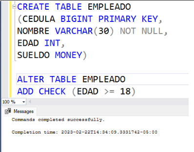
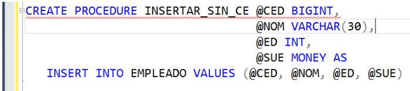
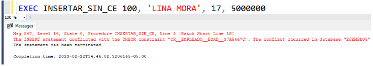
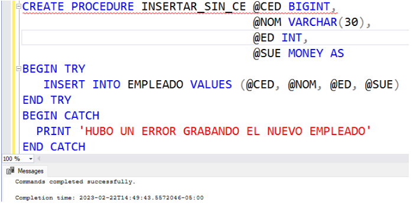
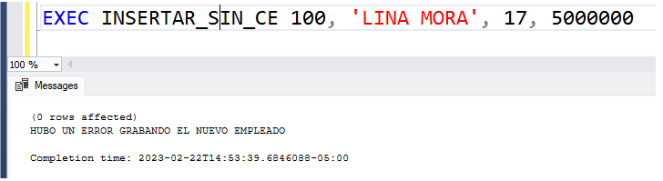

|
Fuente. https://www.presteamshop.com/blog/activar-errores-prestashop/ |
El control/gestión de errores es una parte importante de la programación. A través de la implementación del control de errores en nuestros programas, tenemos el control de la lógica del programa cuando éste falla. En este módulo se aborda el tema de cómo implementar el control de errores en la programación de bases de datos. |
En general, cuando un programa no implementa control o gestión de errores, lo que sucede es que cuando la lógica falla por cualquier motivo, el flujo de ejecución del programa se suspende y se muestra un mensaje de error generado por el sistema, llámese sistema operativo, manejador de bases de datos, etc.
Muchas veces se necesita que cuando el programa falle, no se aborte el flujo de ejecución del mismo, sino que se ejecute una lógica específica. Para eso se implementa el control de errores.
Para implementar esto en la programación de bases de datos en SQL Server, se utilizan las instrucciones TRY y CATCH.
A continuación se explica, con un ejemplo concreto, cómo se implementa el control de errores.
|  |
Suponer que se tiene una tabla llamada EMPLEADO, donde se almacenarán los datos de los empleados de una compañía. Uno de sus campos es la EDAD del empleado. Por aspectos legales, ningún empleado puede ser contratado si no es mayor de edad, es decir, si no tiene 18 años o más. Por eso, al campo EDAD de la tabla EMPLEADO se le crea un check constraint que indique que siempre la edad del empleado debe ser mayor o igual a 18. |
Es decir, si en algún programa se trata de insertar un nuevo empleado con edad menor a 18, el programa fallará, ya que estaría tratando de violar el check constraint.
A continuación se muestra como se comporta un procedimiento almacenado que trate de grabar un empleado menor de edad y que no implemente control de errores.

A continuación se ejecuta el anterior procedimiento almacenado, enviando los 4 parámetros requeridos, siendo la edad menor de 18.

Como era de esperarse, la ejecución falla y como no hay control de errores, se genera el error interno de SQL Server, indicando que se está tratando de violar un check constraint en la tabla EMPLEADO.
Por otra parte, si se desea escribir el anterior programa, implementando control de errores, se utiliza las intrucciones TRY y CATCH de la siguiente manera:

Se puede observar que se crean dos secciones dentro de la lógica del programa: la sección TRY y la sección CATCH. Al igual que en otros lenguajes de programación, por ejemplo JAVA, la lógica normal del programa debe ir en la sección TRY, mientras que la lógica que se desea ejecutar cuando el programa falla, va en la sección CATCH. En este caso, cuando el programa falle, se va para la sección CATCH e imprime el mensaje de error especificado, no el generado automáticamente por SQL Server.
Al ejecutar, de nuevo, el procedimiento almacenado tratando de violar el check constraint, sucede lo siguiente:

El programa nunca suspendió su flujo de ejecución. Simplemente, cuando falló, pasó la lógica a las intrucciones que hay en la sección CATCH. Se tiene el control del flujo de ejecución, aún cuando hay falla.
Es de anotar que, dependiendo de la lógica del programa y aunque no es muy común, pueden haber control de errores anidados, es decir, TRYs dentro de otros TRYs. Lo importante es que la regla es que si existen N TRYs, deben haber N CATCHs.
Dentro de la sección CATCH, existen algunas funciones propias de SQL Server que nos permiten conocer un poco más acerca del error sucedido:
- ERROR_NUMBER(): Devuelve el código de error generado.
- ERROR_SEVERITY(): Devuelve un entero, indicando el grado de severidad del error.
- ERROR_PROCEDURE(): Devuelve el nombre del procedimiento almacenado o trigger donde se produjo el error.
- ERROR_LINE(): Devuelve el número de linea donde se produjo el error dentro de la lógica.
- ERROR_MESSAGE(): Devuelve el mensaje de error detallado que hubiera generado SQL Server.
Como gran conclusión, es una buena práctica implementar control de errores en nuestros procedimientos almacenados y/o triggers. En las funciones de usuarios no está permitido implementar control de errores.
Video: